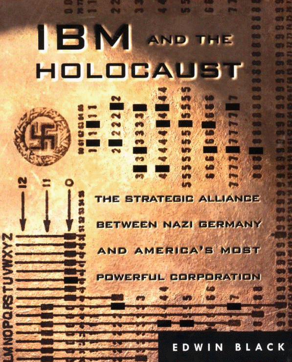

IBM and the Holocaust is the stunning story of IBM's strategic alliance with
Nazi Germany - beginning in 1933 in the first weeks that Hitler came to power
and continuing well into World War II. As the Third Reich embarked upon its
plan of conquest and genocide, IBM and its subsidiaries helped create enabling
technologies, step-by-step, from the identification and cataloging programs of
the 1930s to the selections of the 1940s. Only after Jews were identified - a
massive and complex task that Hitler wanted done immediately - could they be
targeted for efficient asset confiscation, ghettoization, deportation, enslaved
Iabor, and, ultimately, annihilation. It was a cross-tabulation and organizational
challenge so monumental, it called for a computer. Of course, in the 1930s no
computer existed.
But IBM's Hollerith punch card technology did exist. Aided by the company's
custom-designed and constantly updated Hollerith svstems, Hitler was able to
automate his persecution of the Jews. Historians have always been amazed at
the speed and accuracy with which the Nazis were able to identify and locate
European Jewry. Until now, the pieces of this puzzle have never been fully
assem-bled. The fact is, IBM technology was used to organize nearly everything
in Germany and then Nazi Europe, from the identification of the Jews in
censuses, registrations, and ancestral tracing programs to the running of
railroads and organiz-ing of concentration camp slave labor.
IBM and its German subsidiary custom-designed complex solutions, one by
one, anticipating the Reich's needs. They did not merely sell the machines and
walk away. Instead, IBM leased these machines for high fees and became the
sole source of the billions of punch cards Hitler needed.
IBM and the Holocaust takes you through the carefully crafted corporate
collusion with the Third Reich, as well as the structured deniability of oral
agreements, undated letters, and the Geneva intermediaries—all undertaken as
the newspapers blazed with accounts ot persecution and destruction.
Just as compelling is the human drama of one of our century's greatest minds,
IBM founder Thomas Watson, who cooperated with the Nazis for the sake of
profit.
Only with IBM's technologic assistance was Hitler able to achieve the
staggering numbers of the Holocaust. Edwin Black has now uncovered one of
the last great mysteries of Germany's war against the Jews - how did Hitler get
the
names?
What Reviewers Have Said A b o u t
IBM AND THE HOLOCAUST
"An explosive new book. . . . Backed by exhaustive research, Black's case is simple
and stunning."
—Michael Hirsh, Newsweek
"Black's book is most interesting when he is dealing with Watson's stubborn and un-
successful determination to continue in control of IBM's German operation without
appearing to be doing so. He was able to cut off direct relations between IBM in the
U.S. and the Germans while continuing to deal with them indirectly. He was a master
of subterfuge and made a fine art of being in a position to deny collaboration with
the Nazis while operating through subsidiaries who were responsive to his every wish.
. . . And he never forbade them to supply IBM machines that were used in sending
people to camps, which they did."
—Gordon A. Craig, New York Review of Books
"Black establishes beyond dispute that IBM Hollerith machines significantly advanced
Nazi efforts to exterminate Jewry.... IBM and the Holocaust is a valuable contribution
to our understanding of the Holocaust."
—Christopher Simpson, Washington Post Book World
"Black's study . . . contains a wealth of unknown or little-known details. The author
convincingly shows the relendess efforts made by IBM to maximize profit by selling
its machines and its punch cards to a country whose criminal record would soon be
widely recognized."
—Saul Friedlander, Los Angeles Times
"IBM and the Holocaust is a disturbing book—all the more so because its author
doesn't prescribe what should be done about sins committed more than half a cen-
tury ago. It is left to readers to decide."
—Ron Grossman, Chicago Tribune
"Black's book is shocking. Its contents go against the grain of all that is dear to naive
images of corporate America. . . . This book will be a case study in corporate ethics
for years to come."
—Robert Urekew, Midstream
"IBM and the Holocaust is an ambitious book . . . an important contribution to Holo-
caust studies."
—John Friedman, The Nation
"The book adds much to our knowledge of the Holocaust and World War II. Black
convincingly demonstrates the extent to which it [IBM technology], was central to
the operation of the Third Reich."
—Terry W. Hartle, Christian Science Monitor
"Black makes a case that shames the IBM of the mid-20th century.... There will be no
question ... in the minds of readers that IBM officials had the ability to understand
the task their machines were performing. The book succeeds as a piece of excruciat-
ingly documented journalism."
—Karen Sandstrom, Cleveland Plain Dealer
"Black's book is so enlightening [because] it paints a richly textured picture of how a
man [Watson], and an entire company, can ignore all sense of morality while not once
transgressing the lines of business ethics. If nothing else, this book should be required
reading for every first-year MBA student."
—Sam Jaffe, Businessweek.com
"Black's argument that IBM made millions from its association with the Nazis seems
almost impossible to refute."
—John Mark Eberhart, Milwaukee Journal Sentinel
"Black's book ... is an ugly story, hidden for years, told by a master craftsman in
a compelling way. More than just another Holocaust tale . . . it's a chilling lesson."
—Richard Pachter, Miami Herald
"More than 15 million people have visited the Holocaust Museum and seen the IBM
machine there. Surely some have raised the question: How could this prestigious cor-
poration possibly be linked to such a heinous stain on human history? With empirical
evidence, Edwin Black has supplied the answer. IBM and the Holocaust makes an
empirical statement. Edwin Black has made his case."
—Louisville Courier-Journal
"This damning chronicle of IBM's collusion with the Nazis exposes, in horrific detail,
the corporation's opportunistic ride on Hitler's tail."
—Charles Winecoff, Entertainment Weekly
"This is the stuff of corporate nightmare. IBM, one of the world's richest companies,
is about to be confronted with evidence of a truly shameful history. Edwin Black
reveals Big Blue's vital role in the Holocaust."
—Sunday Times, Great Britain
"Black ... shows, in compelling detail, that IBM, 'the solutions company' was also the
company of the Final Solution.... It is a distinctive contribution to the history of the
time. It wholly justifies Black's years of toil. . . a terrible warning from this brilliantly
excavated past."
—Peter Preston, The Guardian, Great Britain
"The computer group IBM is haunted by its past. Edwin Black's book now reveals
the company's involvement in the Holocaust. . . . Previously the Nazi past of 'Big
Blue'" was hardly ever a topic. . . . But now IBM is in the dock. Black's meticulous
research documents just how precisely IBM managers were kept informed about the
whereabouts of their machines."
—Christian Habbe, Der Spiegel, Germany
"Black's . . . book is the first to give the general public a detailed account of how an
American corporation profited from intimate ties with the Nazis. It strips the veneer
from the cherished myth of the purity and patriotism of American business."
—Marilyn Henry, Jerusalem Post
"IBM and the Holocaust raises startling questions about the technology giant's involve-
ment with Nazi government officials—and throws the company's wartime ethics into
serious doubt."
—Jessica Reaves, Time.com
"Black . . . documents IBM's sins with chilling discipline.... IBM and the Holocaust
lays out in numbing detail the terrible deeds of bureaucrates and business leaders....
In the end, thought this book has a subtler story to tell, one frighteningly relevant to
our lives today. IBM and the Holocaust isn't about evil men at a particularly bloody
point in recent history so much as it's about the dawn of the modern information age."
—Douglas Perry, Fort Worth Star-Telegram
"Edwin Black has put together an impressive array of facts which result in a shocking
conclusion never realized before: IBM collaborated with the Third Reich. This book
should be read by everyone interested in the 'under history' of the Second World War."
—Simon Wiesenthal, director, Jewish Documentation Center, Vienna
"Black's great contribution is that he has tenaciously collected a lot of information
and combined it in an original way. Few others have thought to place this informa-
tion in the same context, to see what inferences can be drawn. Black's history makes
two chilling observations. The first is that the Holocaust was possible because the
Nazis had access not only to guns and gas but also to cutting-edge census technol-
ogy. The second is that the Nazis had access to this technology because IBM, in its
paranoid zeal, worked very hard to maintain its market dominance of the global mar-
ket in data processing."
—Anthony Sebok, CNN.com
"A shocking account of IBM's complicity with the Nazis is a reminder that people
bear moral responsibility for the actions of the corporation—a point that critics have
failed to grasp."
—Jack Beatty, The Atlantic Online
"IBM and the Holocaust is a story that must be read if one is to understand how Hitler
and the Nazis were able to implement their Final Solution to exterminate European
Jewry.... Once again, Edwin Black has hit the mark."
—Abraham H. Foxman, national director, Anti-Defamation League
"A tremendous, timely work. Neglected for more than 50 years, the sordid records
disclosing IBM's collaboration with the Nazi regime have now been exhumed by
Edwin Black."
—Robert Wolfe, former chief National Archives expert for
captured German records and Nuremberg documentation
"Leaves no room for deniability."
—Malcolm Hoenlein, executive vice chairman,
Conference of Presidents of Major American Jewish Organizations
"Edwin Black's groundbreaking book, IBM and the Holocaust, made a great impres-
sion on me. It documents, for the first time, that an American company, IBM, bears a
good deal of the moral responsibility for the preparation of the persecution of the
Nazi victims. IBM and the Holocaust confirms the belief that the Holocaust was not
only a cruel, unprecedented crime, but also an enormous bureaucratic undertaking.
—Franclszek Piper, historian, Auschwitz-Birkenau State Museum
CONTENTS
1
Acknowledgments
7
Introduction